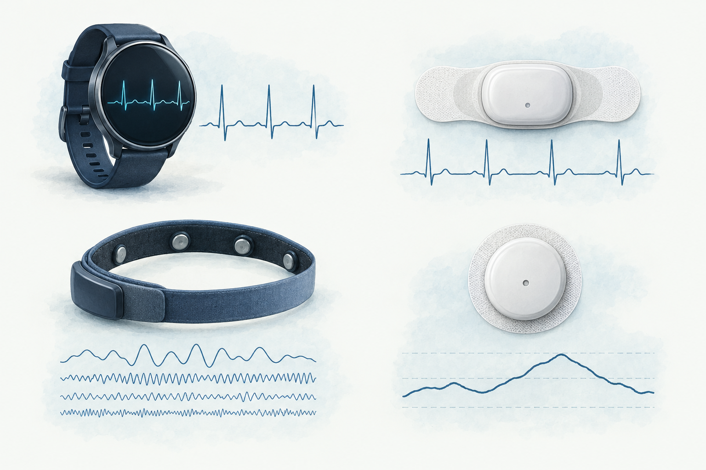

Illustrative devices and traces · not product specifications or measured results
01 · SENSE
Wearable sensors capture body and context signals.
ECG records electrical heart activity; EEG records brain activity; CGM tracks interstitial glucose. Devices measure different signals—not a complete picture of health.
Other inputs include optical pulse (PPG), motion (IMU), muscle activity (EMG) and respiration. Sleep is inferred from signals, not a sensor type.